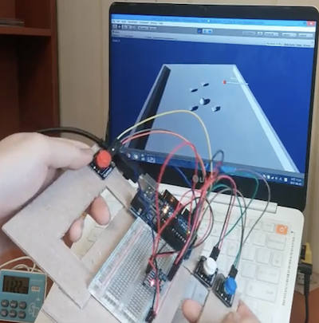
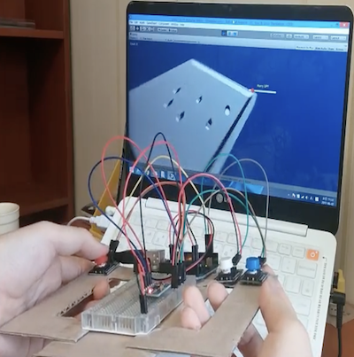
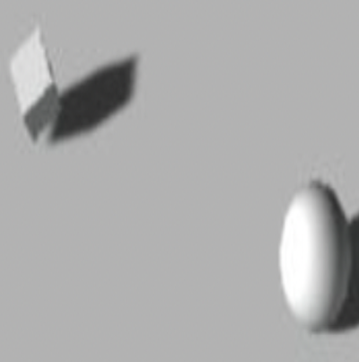
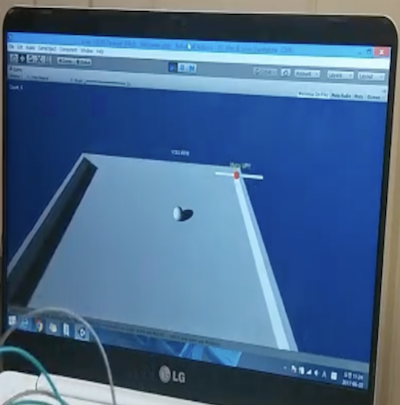

|  |
ボールを操縦する機能 コントローラを傾けてボールを操縦できます。 |
|  |
視点を変更する機能 コントローラ内のボタンを押して視点を切り替えることができます。 赤いボタンを押すと反時計回りに、青色のボタンを押すと時計回りに、ハニカムボタンを押すと元の位置に戻ります。 |
|  |
ボックスが消える機能 ボールがボックスに近づくと、そのボックスは消えます。 |
|  |
勝負を判断する機能 制限時間内にボックスを全て取り除くと勝ちます。 |